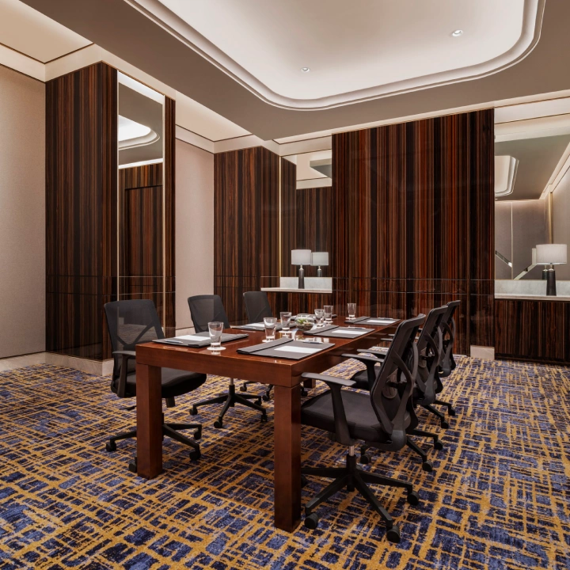
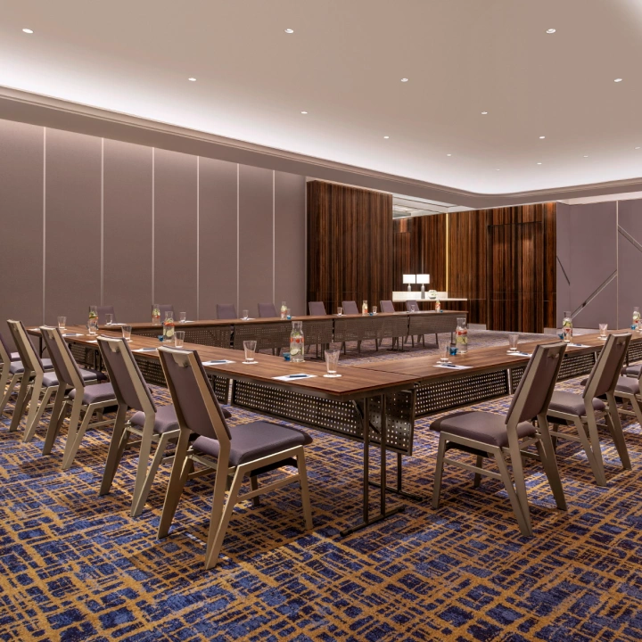

A GRAND PERSPECTIVE
The Grand Ballroom
A large-scale setting for conferences, launches, and gatherings that bring your world together.
4,320guests · theatre
MEETINGS & EVENTS AT THE WESTIN SURABAYA
Bring the right people into the right setting.
Create a gathering that moves you forward.
YOUR PEOPLE. YOUR PURPOSE.
From focused conversations to a room full of possibilities. Choose the occasion you have in mind.

FOCUSED CONVERSATIONS
Make space for meaningful conversations, team workshops, and the decisions that shape what comes next.
FIND YOUR SETTING
A large-scale setting for conferences, launches, and gatherings that bring your world together.
A setting for presentations, learning sessions, and focused gatherings with your team.

Keep the conversation personal with a space for smaller sessions and meaningful connections.
Westin Room figures show maximum capacities across the featured meeting room configurations. Published maximum capacities vary by setup. Staging, equipment, decor, and operating requirements may reduce guest numbers. Images show representative Westin meeting setups.
View Official Venue Specifications
VIP MEETING PACKAGE
For a focused executive gathering, explore the VIP Meeting Package at the Westin Club Lounge on the 39th floor, for up to 10 participants.
Share your date, meeting needs, and dining preferences with our Event Specialist to receive a personal proposal.
Pricing, duration, menus, equipment, and benefits are confirmed in the official proposal.
MAKE YOUR BRIEF THE BEGINNING
Start with your purpose, dates, attendance, and preferred setup.
Discuss venue options, dining, technology, and any accommodation requirements.
Confirm availability, arrangements, and costs with our Event Specialist.
LET’S START WITH YOUR VISION
Tell us what you have in mind. We’ll help you take the next step towards a gathering that feels right for you.
Speak with our Event SpecialistThe Westin SurabayaYOUR NEXT MEETING OR EVENT
From focused meetings and team gatherings to conferences and exhibitions, find the right setting for your next occasion at The Westin Surabaya.
Plan Your Next Event